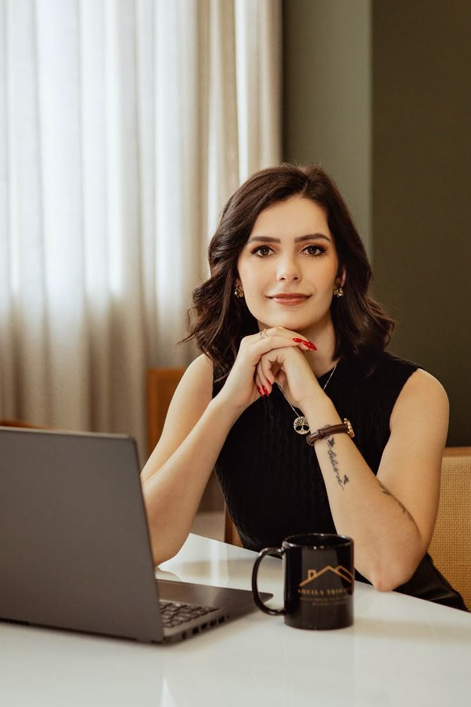
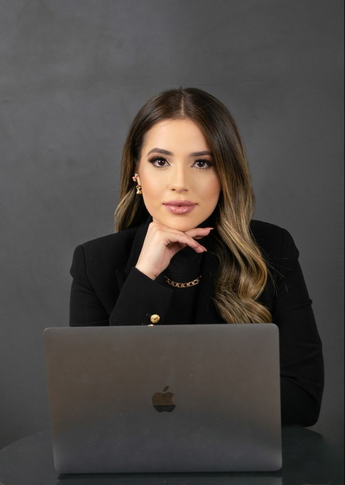

Contamos con un equipo de profesionales dedicados a brindarte apoyo en tu búsqueda de transformación personal. Estamos comprometidos en acompañarte en cada paso hacia una vida renovada y llena de posibilidades. Ya sea que estés explorando oportunidades, aspirando a metas significativas o buscando cambios positivos, nuestro equipo está listo para proporcionarte la orientación necesaria. Tu camino hacia una vida transformada está a punto de enriquecerse con nuestro compromiso contigo.
1. Dra. Ana María TorresEspecialidad: Psicología Clínica y Terapia Cognitivo-Conductual. Experiencia: Más de 10 años en el tratamiento de trastornos de ansiedad y depresión. Formación: Universidad Nacional Autónoma de México (UNAM). Frase: "Acompañar y comprender, es el inicio de sanar." |
|
2. Mtra. Sofía Hernández LópezEspecialidad: Psicoterapia Humanista y Terapia de Pareja. Experiencia: 8 años en intervención emocional y desarrollo personal. Formación: Instituto Mexicano de Psicoterapia Humanista. Frase: "Cada persona es capaz de construir su bienestar." |
 |
3. Lic. Paula García MendozaEspecialidad: Psicología Infantil y Atención a Neurodivergencias. Experiencia: 7 años trabajando con niños, adolescentes y familias. Formación: Universidad Iberoamericana. Frase: "Escuchar a los niños es sanar generaciones." |
|
4. Dra. Mariana Cruz SalazarEspecialidad: Neuropsicología y Evaluación Psicométrica. Experiencia: 12 años en diagnóstico y rehabilitación cognitiva. Formación: Universidad de las Américas Puebla (UDLAP). Frase: "Cada mente es única; entenderla es transformarla." |
 |
5. Mtra. Laura Jiménez RivasEspecialidad: Psicoterapia Sistémica Familiar y de Pareja. Experiencia: 9 años fortaleciendo relaciones familiares y redes de apoyo. Formación: Universidad Autónoma de Guadalajara. Frase: "Las relaciones sanas son la base del bienestar humano." |
Agenda tu cita y conoce un espacio seguro para ti.